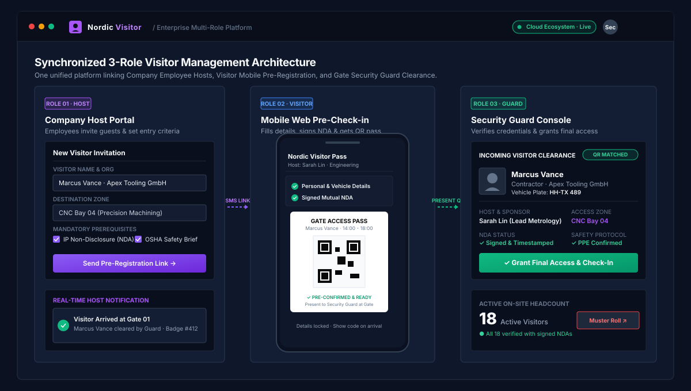
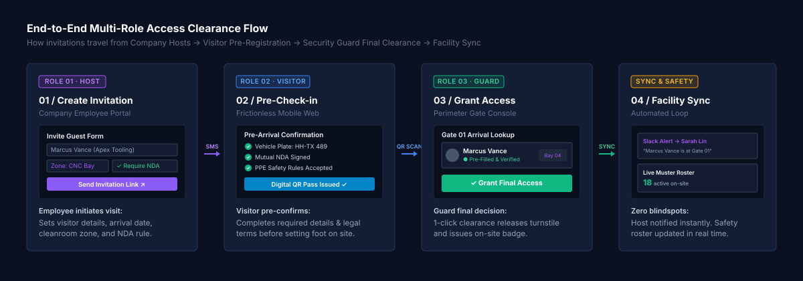
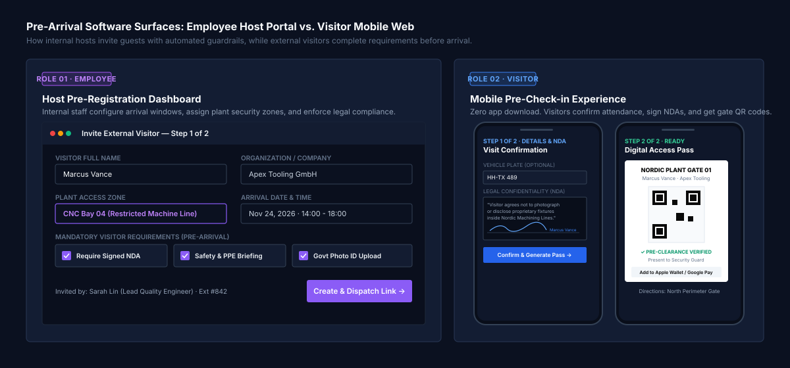
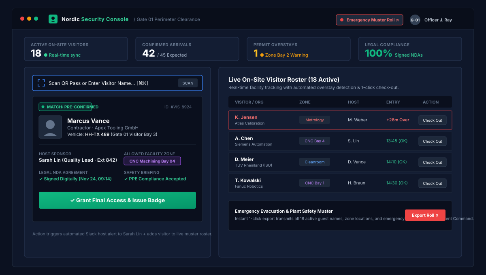

Nordic Visitor (VMS) — Multi-Role Industrial Visitor Management Software
Designing a synchronized 3-role software platform connecting employee invitations, visitor mobile pre-registration, and security guard gate clearance.

From Fragmented Emails & Paper to Synchronized Multi-Role Software
- 3-Sided Role Architecture: Mapped and connected three interdependent user personas: the internal Employee Host (invitation & zone permits), the External Visitor (mobile pre-check-in & NDA signing), and the Gate Security Guard (verification & final access grant).
- Frictionless Mobile Web Onboarding: Designed a zero-download web flow delivered via SMS/link, allowing visitors to verify details, sign confidential NDAs, and receive a dynamic QR pass before arriving at the factory.
- High-Velocity Security Guard Terminal: Built an ergonomic gate console featuring sub-second QR matching, visual credential verification, 1-click access decision, and automated real-time host notifications.
24-Second Gate Clearance & 100% Pre-Signed Compliance
- 85% Faster Arrival Time: Reduced physical gate check-in time from 6+ minutes of phone calls and paper signing down to 24 seconds with pre-verified digital credentials.
- 100% Verified Legal Compliance: Zero unbriefed visitors entering restricted CNC or cleanroom bays; all legal NDAs and PPE acknowledgments verified prior to entry.
- Zero Emergency Blindspots: Eliminated manual sign-in binders with a live digital muster roll transmitting verified on-site headcount to emergency fire teams in 1 click.
In high-security automotive and precision manufacturing plants, managing external visitors is complicated. Facilities contain restricted CNC machining bays, ISO cleanrooms, and confidential pre-release prototypes. Before our software intervention, the arrival journey suffered from three painful breakdowns:
Employees invited contractors via scattered calendar invites without attaching required non-disclosure agreements, leaving reception blind to who was authorized to enter which specific zone.
Visitors arrived unannounced at perimeter security, spent 10 minutes reading dense paper legal forms on clipboards, and leaked proprietary supplier names visible on previous binder pages.
Guards were stuck in phone tag trying to reach busy hosts, lacked real-time visibility into who was on-site, and had zero accurate roster to hand fire fighters during plant evacuation alarms.
Instead of treating visitor management as a passive logging tool, we architected Nordic Visitor as a collaborative software ecosystem where every participant completes their step at the right moment:

When an internal employee sends an invitation from the Host Portal, the visitor receives a unique link via SMS and email. Opening the link launches a lightweight, responsive web app that guides them through a quick 2-step confirmation:

At the perimeter gate, security guards operate a dedicated desktop web console optimized for rapid decision-making. When a visitor presents their mobile QR pass, the system matches their pre-filled record in less than 0.3 seconds:

By treating visitor management as a synchronized, multi-role software challenge rather than isolated gate paperwork, we eliminated reception bottlenecks across three industrial pilot facilities while establishing a rock-solid safety and legal audit trail.
Nordic Visitor (VMS) — Multi-Role Industrial Visitor Management Software
Lead Product & Interaction Designer · Multi-Role Workflows, Employee Web Portal, Visitor Mobile Web App, Gate Security Console
Explore other case studies
Nordic ONE
Industrial software platform unifying Vision (Flagship), MES, ERP & EQMS.
View case study →Nordic OS
Internal engineering workspace connecting optical discovery, 3D CAD, and role access.
View case study →AERA
Modular architectural air purification system for modern commercial environments.
View case study →GLIDE
Transformable electric micro-mobility vehicle and pop-up retail system.
View case study →